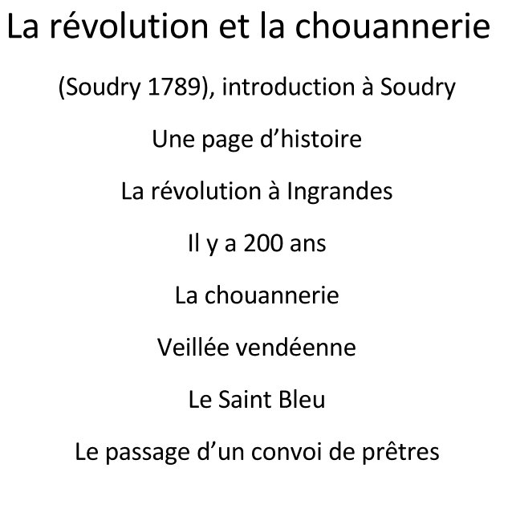
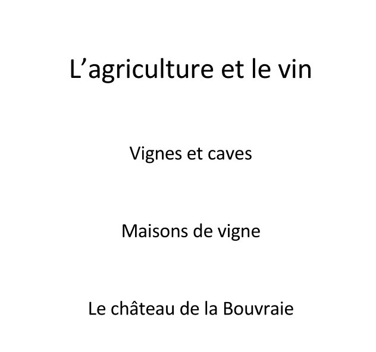

Autrefois
Commune d'Ingrandes-Le Fresne / Loire
Association Tourisme Culture et Patrimoine
Notre histoire
Retour à la page d'accueil
La loire et les bateaux
La route et le pont
L'administration, les impôts
Le commerce et les services
L'agriculture, le vin
Des personnages célèbres
Les édifices et la vie avant la Révolution
La révolution et la Chouannerie
Depuis le XIXème siècle



L'histoire du Fresne
Les artistes et écrivains
Les boules de fort
Périodes de l'histoire d'Ingrandes
La gabelle,répréssion et peines...
La Pierre d'Ingrande ou Pierre de bretagne
L'ancien Château d'Ingrande
Les Foires et les Champs de foire
Les origines de la Boule de Fort à Ingrande
Les principales auberges à Ingrande avant la révolution
Principales voies de communication anciennes